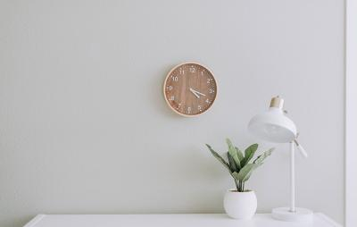
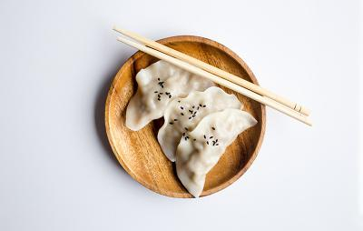
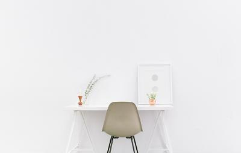

Finding simplicity in life

July 23, 2019 | 3 comments
Life can get complicated really quickly, but it dosen't
have to be! There are many ways to simplify your life, a few of which we've
explored in the past. This week we're taking a bit of a approach through, in how
you can find simplicity in the life you already living.
CONTINUE READING
Keeping cooking simple
Food is a very important part of everyone's life
If you want to be healthy, you have to eat healthy, One of the easiest ways
to do that is to keep your cooking nice and simple
CONTINUE READING

July 19, 2019 | 3 comments
Simplicity and work
Work is often a major source of stress. People get
frustrated, it ruins their relationship with others and it leads to
burnout. By keeping your work life as simple as possible, it wiil help
balance everthing out.
CONTINUE READING

July 3, 2019 | 3 comments